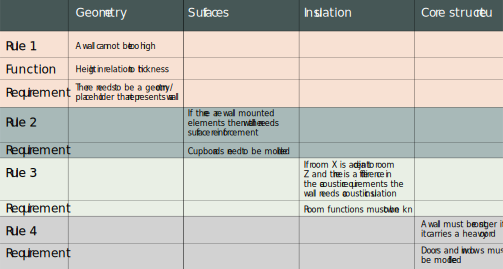
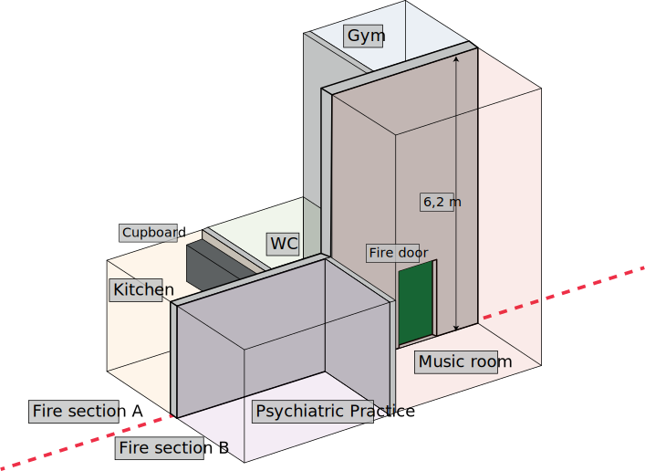

Agenda
- Historical retrospective (before PhD)
- My research and the challenges it addresses
- Selected projects
Historical retrospective
Before my PhD
My research
Problems in scope
- We do BIM, but it involves perhaps 10 % of the knowledge we generate
- Complex and interdependent project documents are handled in a manual fashion
- Accessing information is hard and requires manual work
- Most of your time is spent on revising project material to reflect recent changes
- Knowledge and traceability is lost as people change jobs
A deeper look at my Master´s thesis
Challenges
- Required manual cleaning of model in SimpleBIM
- Database schema not easily extended
- Calculation still had to be performed manually in desktop app
- Web app was coded from scratch in PHP and was a big mess üòÅ
...and then I discovered the flexibility of knowledge graphs!
Some research highlights
- BOT: The Building Topology Ontology
- OPM: Ontology for Property Management
- FSO: Flow Systems Ontology
Selected projects from NIRAS
Byggeriets Blockchain
The intelligent and traceable minutes of meetings
WeBIM
An internal platform for building data management
ScienceCity Lyngby
A democratic platform for data sharing
ConTech Pioneer Project 5
Context-derived requirements for gypsum board walls
BART
Automated Rule Checking in Construction
Almen Byggeportal
ConTech project
It was investigated how boundary conditions for walls can be described in a semantic data model so:
- The architect doesn't need to create detailed drawings
- The architect can continiously check the design against manufacturer solutions
- IKEA like manuals could be machine generated for the specific wall
- The wall could potentially be custom made by the manufacturer
A set of rules were defined
A demo model was created
BART Stage 2 delivery
BART Stage 2 delivery
Thank you for your attention!
Questions? Thoughts? Ideas? Let's discuss them over a ☕